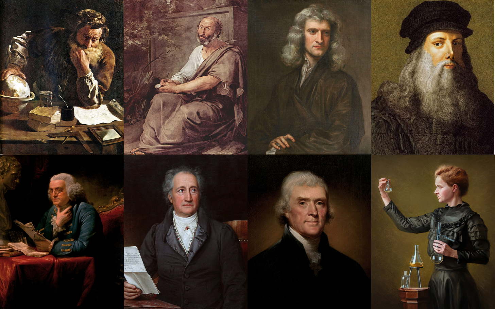

The Revival of the Polymaths
the time is now — go learn, go deep, never stop, and please produce
One of the outcomes of the AI revolution, I envision, will be the revival of the polymaths.
Polymaths, individuals who master multiple fields at the highest levels, were much more common in past eras. Think of the founding fathers of the United States, Benjamin Franklin and Thomas Jefferson, who were inventors, writers, diplomats, and scientists. Or maybe the most famous of all, the man of the Renaissance, Leonardo da Vinci, who was a painter, engineer, and anatomist. They all mastered various fields and made great contributions to each of them individually, as well as through the combination and crossing of knowledge.

The most recent age of polymaths lasted from the Renaissance, through the enlightenment and early modernity, up to the first half of the 20th century. Then, as knowledge deepened rapidly due to the exponential growth of scientific and technical fields, most notable post-World War II, it required more specialization, and so it became nearly impossible for one person to be well-acquainted in multiple disciplines in a fruitful way. The sheer volume of information and the complexity of fields like physics, mathematics, biology or even philosophy required intense focus, making true polymathy rare (though there are exceptions).
That now changes, as we enter an intelligence explosion fueled by AI. A shift that gives us immense leverage to learn and experiment across disciplines. In the hands of the curious, the ambitious, the high-agency few, this will bring back the age of the polymath. The fluidity of ideas, curiosity-led tinkering, invention, rethinking, discovery — all the magic of the Renaissance and the Enlightenment — is ahead of us. It’s available. But don’t get confused: it won’t come easy.
We’ll see individuals contribute across multiple fields, pulling ideas from one into another. Culture, the arts, politics, economic frameworks, engineering, biology — they’ll all become one big game field. So will new frontiers: engineering breakthroughs in space, and revivals in older fields like manufacturing. The doors are open, the tools are ready — and it’s all up for the taking.
The internet was an early teaser of that — making knowledge much more accessible, and free for all. You can quite literally learn almost anything humanity has to offer on the internet, though mastering it still requires many many hours of learning, experimenting, failing, debugging.
It will be so with AI too, but the speed of iteration and the depths one can get into will be dramatically different. And the thing is — I don’t have to master deeply any field, I mostly need to be able to speak its language and play in a sandbox, a simulated environment, to test my ideas and assumptions. That is how I learn best (by doing) - and AI will allow us to do it across many fields, not only in computer science.
As the barriers to knowledge, information processing and experimentation are reduced — the real value won’t come from staying within one silo. It will come from fluidity — the ability to take ideas from one domain and apply them in another, to see connections others miss, to invent at the intersection. Modern breakthroughs aren’t isolated. AI will reshape the economy, which will reshape culture, which will reshape politics and institutions. Biology and computation are merging. Brain-computer interfaces will demand insights from neuroscience, hardware engineering, ethics, and law. If you treat each domain as its own fortress, you’ll miss the bigger shift. But if you’re fluid — if you can roam, connect, remix — you’ll be at the frontier.
I don’t have a “formal” high education myself, though I’d place myself at the top percentile of computer scientists. I spent, spend and will spend an order of magnitude more time learning things compared to others who specialized in it formally. I had spent countless hours on the internet trying to figure things out and brute-force myself into understanding. I believe that with AI I can do it again and again, ask endless questions, have a tutor that can just explain until I get it - and become a masterchef, a polymath, in many fields and professions.
I don’t think I’ll become the best in any one field — and definitely not in all of them — by taking this path. But I believe there’s immense value and leverage in choosing polymathy over specialization. That said, I might be wrong. There are still many unknowns. Will humans even stay relevant? And if we do, maybe the real leverage will lie in going deeper, not broader. A few friends I spoke with recently had the opposite take — this is the age of ultra-specialization. If AI can take you 80% of the way in any domain, then the most valuable thing a human can do is push into that last, difficult 20%. I think about that a lot.
In the age of AI, bottom-up, brute-forcing learning and taking action will lead to the best outcomes.
I’d argue that my informal education has put me in a better position to take full advantage of this trend — because I’m tuned to self-learning, to exploring, to asking questions, to “try and see if I can do that,” rather than top-down feeding of knowledge. I’m continuously learning. I’m not tied to a four-year block for learning. I’m on an endless path of exploring, of trying, of testing things out. With AI, I can do it better, learn faster, dive deeper, test more. I get curious about a specific topic, and then I’ll spend weeks, months, sometimes years — on and off — diving in. I did that with computer science, code, and machine learning. I’m doing it now with history, philosophy, and electrical engineering. I hope to continue learning that, and more: mechanical and aerospace engineering, economics, biology.
So to finish up — I’m extremely optimistic about what’s ahead. I believe AI will enable us to revive the old idea of mastery, of polymathy. By reducing the barriers to knowledge, and empowering the ones who have agency and curiosity, we’ll see a wave of invention, discovery, and new thinking across culture, science, and society. AI is ours for the leverage. The time is now — go learn, go deep, never stop. And please — produce. You are precious because you are agentful and curious.
Adam Cohen Hillel,
Aspiring Polymath